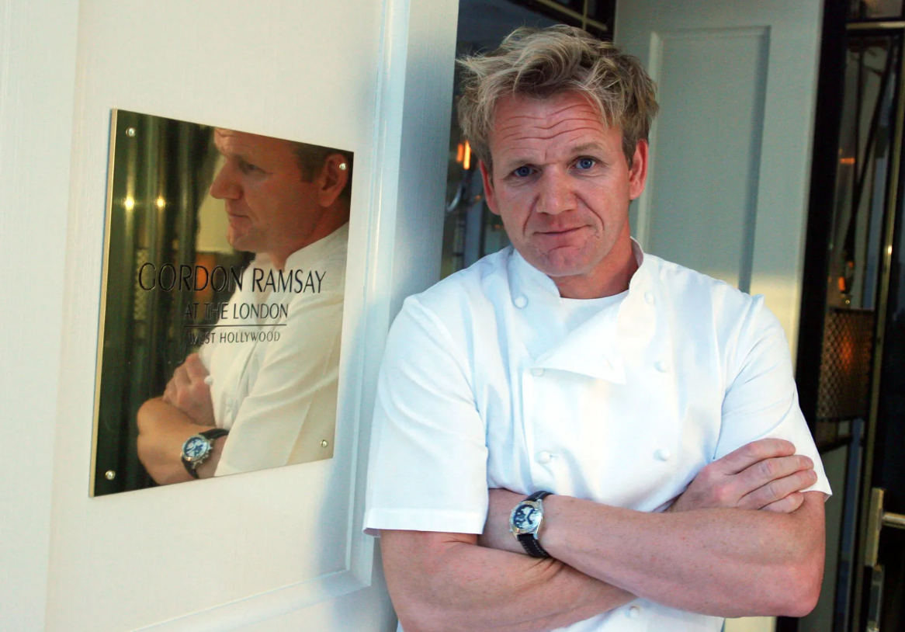

Odin Recipes

Hello guys, this is a public collection of the favorite meal of the famous Gordon Ramsay chef, he told them to me IRL!!!!!
Pilk (yummi)
Ham and bananas (Netherland style)
Perfection Salad